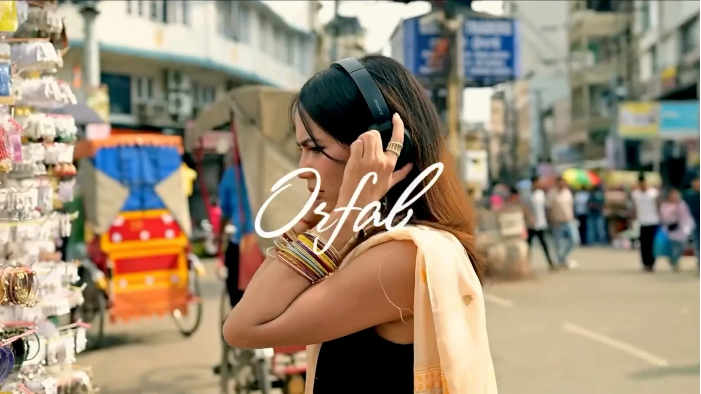
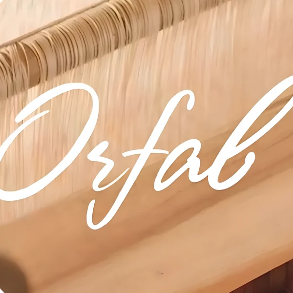
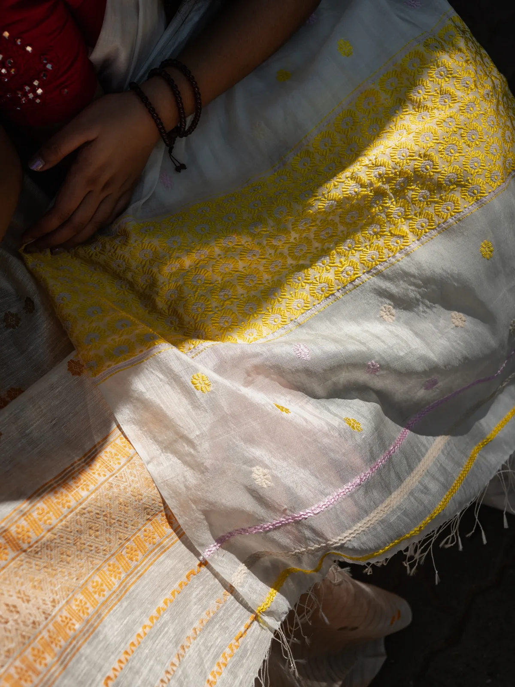
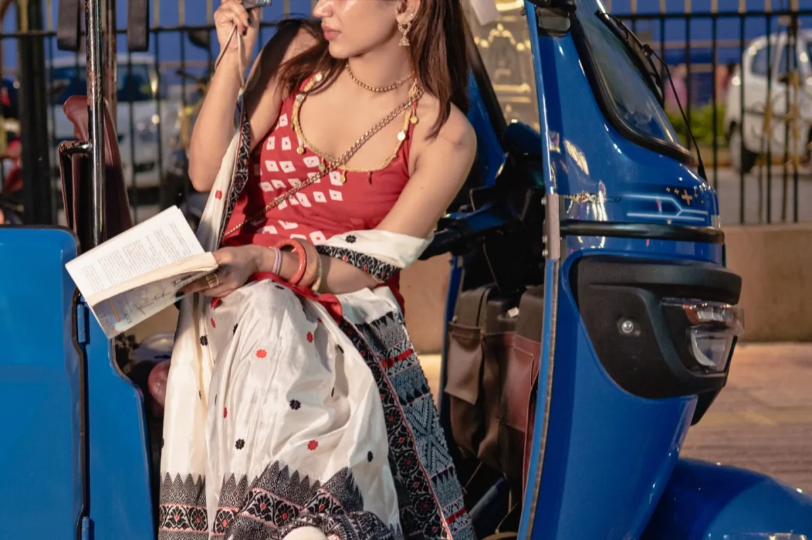
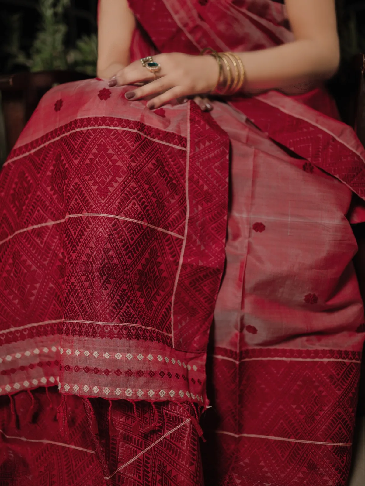
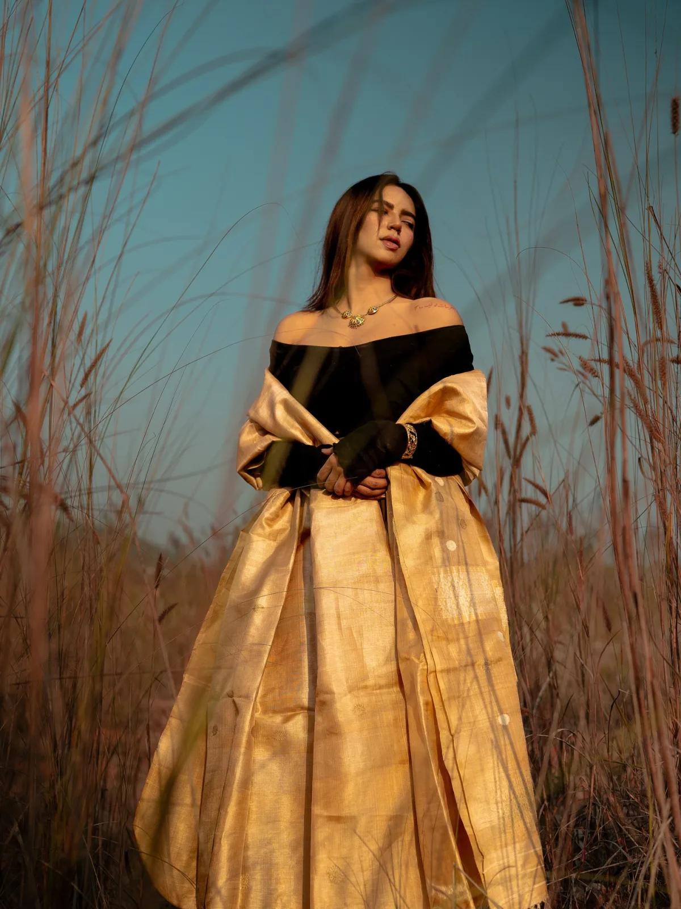

Orfab By Orient
Fashion & Lifestyle Company

Every Thread Tells A Story.
Orfab By Orient Isn’t Just About Fabrics—It’s About Craftsmanship, Culture, And Timeless Design. Our Content Focused On Turning Each Collection Into Visual Stories That Celebrated Texture, Movement, And The Elegance Of Handcrafted Fashion.
Rather Than Simply Showcasing Garments, We Captured The Moments Around Them. Natural Light, Authentic Locations, And Thoughtful Styling Came Together To Create Content That Felt Warm, Effortless, And Deeply Connected To The Brand’s Identity.
Campaign Reels
Services
Impact
Brand
Strategy
8.2M +Views Generated
Creative
Direction
240%Growth In Reach
Content
Production
3.1M+Organic Impressions
Short-
Form Video
180+Content Pieces




Celebrating craftsmanship through
thoughtful visuals, timeless
styling, and stories woven into
every collection.